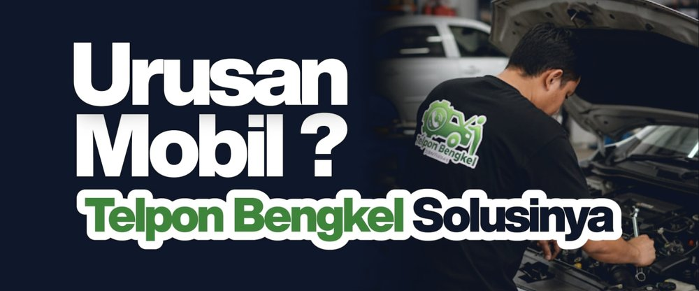

Menghubungkan Anda dengan mekanik terpercaya di Pontianak untuk perawatan dan perbaikan mobil. Cepat, Mudah, dan Terpercaya.

Berdiri 18 Februari 2022, Telpon Bengkel lahir sebagai penghubung antara pemilik mobil yang membutuhkan pertolongan dengan teknisi ahli. Kami paham, mobil mogok adalah hal yang mengganggu ritme hidup Anda.
Hubungi kami, kami segera datang.
Teknisi pilihan dan terpercaya.
Klik salah satu kartu untuk melihat detail layanan.
Melambangkan kendaraan yang butuh uluran tangan kami.
Kesiapan tenaga ahli dalam melayani.
Koneksi cepat antara Anda dan kami.
Inspirasi QS. Al-Kahfi: 95, setiap kemampuan adalah anugerah Tuhan.
"Menjadi layanan bantuan kendaraan terpercaya yang memudahkan masyarakat Indonesia mendapatkan solusi otomotif dengan cepat dan profesional."
"Responya cepat, mekaniknya datang langsung ke lokasi. Mobil saya mogok malam-malam dan langsung dibantu. Sangat membantu!"
Ahmad
Pelanggan
"Mekaniknya profesional dan ramah, harganya juga transparan sebelum dikerjakan. Recommended buat yang butuh bengkel panggilan."
Siti
Pelanggan
"Buka 24 jam beneran, jam 2 pagi masih diangkat teleponnya. Terima kasih Telpon Bengkel sudah jadi penyelamat perjalanan saya."
Rudi
Pelanggan
Kunjungi bengkel kami atau hubungi langsung untuk layanan panggilan ke lokasi Anda.
Jl. Kesehatan, Jalur C Jalur 1 No.28C, Kota Baru, Kec. Pontianak Sel., Kota Pontianak, Kalimantan Barat 78121
Buka 24 Jam, Setiap Hari
+62 858-2841-7003
Hal-hal yang sering ditanyakan seputar layanan Telpon Bengkel.
Waktu tempuh tergantung lokasi Anda, namun tim kami akan segera meluncur begitu pesanan dikonfirmasi. Karena kami buka 24 jam, respon cepat siang maupun malam.
Ya, benar. Telpon Bengkel siap melayani Anda 24 jam setiap hari, termasuk akhir pekan dan hari libur, karena kami paham mobil bisa bermasalah kapan saja.
Mekanik kami akan memberikan estimasi biaya secara transparan setelah melakukan diagnosa awal di lokasi, sebelum pekerjaan perbaikan dimulai. Tidak ada biaya tersembunyi.
Kami melayani area Pontianak dan sekitarnya. Untuk memastikan lokasi Anda dapat dijangkau, silakan hubungi kami langsung via WhatsApp atau telepon.
Kami menyediakan Bengkel Panggilan, Emergency Service, Inspeksi Kendaraan, dan Perawatan Rutin. Lihat detail lengkapnya di bagian "Layanan Unggulan" di atas.